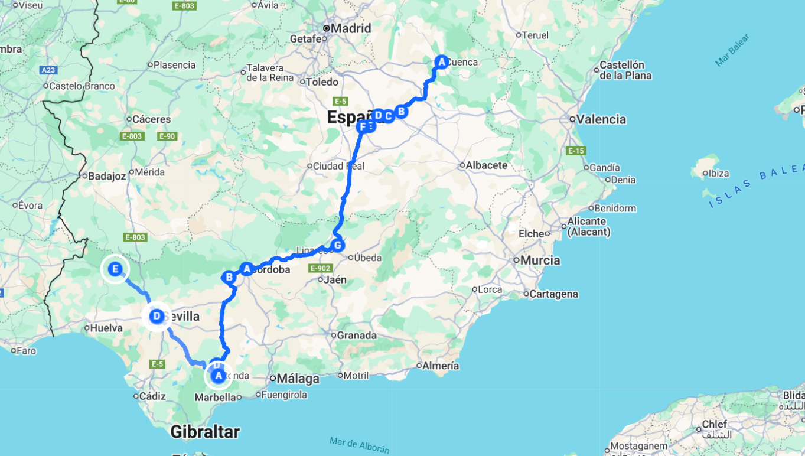

LA RUTA ESPAÑOLA

Recorrer en moto la ruta que une Cuenca con Aracena es emprender un viaje donde cada kilómetro encierra una historia, un paisaje y una emoción distinta. Desde la partida en la majestuosa Cuenca, con sus casas colgadas y su aire de altura, comienza una travesía que poco a poco desciende hacia el corazón de La Mancha, donde el horizonte se abre y el viento parece acompañar el rugido de los motores. La sensación de libertad se mezcla con la expectación de lo que está por venir: carreteras que parecen hechas para disfrutar, pueblos históricos que asoman en la distancia y esa magia que solo se descubre cuando el viaje se comparte entre amigos sobre dos ruedas.
Los primeros tramos atraviesan El Toboso y la tierra de los Molinos de Viento, llanuras infinitas donde el asfalto se confunde con el cielo. Aquí, la moto se convierte en un compañero fiel que traza líneas entre los caminos del Quijote, mientras el sol tiñe de dorado los campos y el olor a tierra acompaña cada curva, en ruta directa hacia la calidez de Córdoba. No hay prisa: solo el placer de rodar, de sentir cómo el paisaje se transforma lentamente y La Mancha va dando paso a las sierras andaluzas. Las paradas se llenan de risas, fotografías y anécdotas que pronto formarán parte del recuerdo colectivo del grupo.
Llegar a Setenil de las Bodegas es como entrar en una postal. Sus casas excavadas en la roca sorprenden al viajero mientras las calles se llenan de historia y vida, y la carretera que lleva hacia la espectacular Ronda se convierte en una sinfonía de curvas, aromas y colores. Son tramos donde la moto baila al compás del terreno, donde el Tajo corta la tierra como una cicatriz majestuosa. Es imposible no detenerse, quitarse el casco y respirar hondo, agradeciendo el privilegio de estar allí, sintiendo el aire de sierra y preparándonos para la gran ciudad, viviendo el viaje plenamente.
El tramo final hacia Sevilla y Aracena es un canto a la alegría del sur. El olor a azahar, el ritmo de la capital hispalense, con su Torre del Oro y su Plaza de España, y la calma de la Sierra de Huelva acompañan los últimos días de ruta. En Sevilla, los motores rugen con un sonido especial; la capital invita a celebrar; y en Aracena, el silencio de la dehesa pone el broche de oro al viaje, culminando en la Ruta del Jamón. Al caer el sol, entre tapas, risas y anécdotas, todos saben que han compartido algo único: una aventura que no se olvida, una ruta que se siente en la piel, y el deseo inevitable de repetirla, porque rodar juntos no es solo viajar… es vivir intensamente.
✔️ TU VIAJE INCLUYE …
- Pack de Bienvenida
- Desayunos en Hotel y Cenas en Ruta
- 5 días y 4 noches en Hoteles
- Aparcamiento para tu vehículo
- Video reportaje del viaje
- Seguro de Protección Civil
- 2 Personas coordinan el grupo
- En las comidas y cenas solo se incluye ” Agua “
❌ TU VIAJE NO INCLUYE …
- Motocicleta para el viaje
- Cualquier concepto no especificado en el apartado ” Tu Viaje incluye …”
- Gasolina y peajes de Autopistas o Autovías
- No se cubren gastos derivados de conductas negligentes o irresponsables
- El seguro de protección civil incluido solo cubre a terceros y no reemplaza el seguro personal obligatorio
- Bebidas en ruta y por supuesto bebidas alcohólicas ni bebidas en minibar de hoteles
- Entradas a Monumentos
- Las propinas son voluntarias y a discreción del cliente
🗒️ A TENER EN CUENTA …
- Todas las habitaciones son compartidas. Si viajas solo o no cuentas con un acompañante, la organización te asignará un compañero Kit de reparapinchazos
- Llevar los medicamentos personales y cualquier material médico necesario
- Pasaporte y visado en regla
- Permiso de circulación y tarjeta ITV, Carnet de Conducir

DÍA 1
Reunión en el Hotel, (Cuenca)
El viaje comienza en el Hotel, punto de encuentro donde las motos y sus pilotos se dan cita con la ilusión de compartir ruta y kilómetros.
DÍA 2
Tras los Pasos de Don Quijote hacia el Sur Legendario (501 Km)
Salimos de Cuenca hacia los paisajes de La Mancha, siguiendo la ruta del Quijote. Visitaremos los icónicos Molinos de Don Quijote y el pueblo de El Toboso. Parada para una comida con vistas en el Mirador de los Molinos, recargando energías con sabor local. Tras el almuerzo, la ruta en moto continúa hacia el sur, con destino a la histórica Córdoba. Una etapa de contrastes: de las llanuras manchegas a los primeros olivares andaluces. Llegada al final del día para disfrutar de la ciudad califal.
DÍA 3
Cuevas, Pueblos Blancos y el Embrujo de la Serranía (341 Km)
El día comienza con rumbo a Setenil de las Bodegas, uno de los Pueblos Blancos más impresionantes. Visitaremos sus singulares calles con casas excavadas en la roca, como Cuevas del Sol y Cuevas de la Sombra. Disfrutaremos de la gastronomía local en este entorno único. Por la tarde, la ruta nos lleva a Ronda. Tramo de carretera panorámica. Haremos una parada para ver el espectacular Tajo y el Puente Nuevo antes de la cena y el descanso, preparándonos para las rutas del día siguiente.
DÍA 4
El Oro de Sevilla y la Tranquilidad de la Sierra (90 Km)
Dejamos la Serranía de Ronda para viajar a Sevilla, la capital andaluza. Haremos una parada en la ciudad para visitar lugares emblemáticos: la Torre del Oro, el Parque de María Luisa y la majestuosa Plaza de España. Disfrute de la gastronomía sevillana antes de retomar la ruta. Por la tarde, nos dirigimos al Parque Natural Sierra de Aracena y Picos de Aroche. Carreteras sinuosas y verdes hasta la tranquila localidad de Aracena, zona productora del mejor ibérico.
DÍA 5
Sumérgete en el Sabor Ibérico
Este día es una inmersión total en la cultura y gastronomía de Huelva. La Ruta del Jamón Ibérico de Aracena ofrece una experiencia de casi cuatro horas. Pasearemos por la dehesa, conociendo el proceso de cría del cerdo ibérico en el ecosistema de encinas y alcornoques. Visitaremos criaderos, secaderos y bodegas para descubrir el secreto de su calidad. El día culmina con una exquisita degustación de jamón de bellota y productos ibéricos, un cierre perfecto para la aventura antes de la despedida.